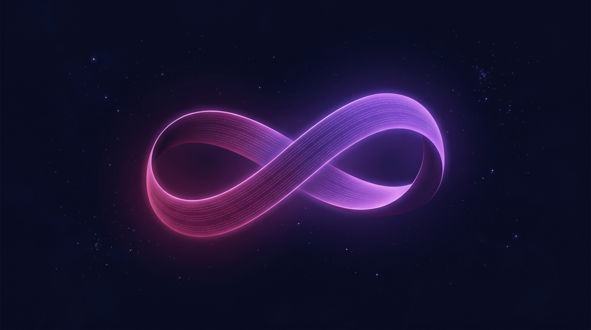

El argumento
de Hume y sus fallas
David Hume (1711–1776) formuló el ataque anti-milagro más influyente de la historia. Suena contundente… hasta que lo examinamos de cerca.

- 1711–1776 · Ilustración escocesa
- Formuló el argumento anti-milagro más citado
- Investigación sobre el entendimiento humano (1748)
La ley natural describe lo que ocurre de forma regular.
Un milagro es, por definición, un suceso raro.
La evidencia de lo regular siempre supera a la de lo raro.
El sabio basa su creencia en la mayor evidencia.
El sabio nunca debe creer en un milagro.
La premisa débil es la número 3: "lo regular siempre pesa más que lo raro." El argumento entero tiene tres fallas de fondo.
Hume dice que la experiencia "uniforme" prueba que los milagros no ocurren. Pero solo sabemos que la experiencia es uniforme si ya decidimos que todos los testimonios de milagros son falsos. Los milagros no ocurren… porque de antemano dijimos que no ocurren. Eso no es ciencia; es un prejuicio disfrazado de argumento.
Sabemos que la experiencia contra ellos es uniforme solo si sabemos que todos los informes son falsos. Y solo podemos saber eso si ya sabemos que los milagros nunca ocurrieron. Estamos discutiendo en círculo.

El argumento de Hume traza un círculo cerrado: la conclusión que quiere probar ya está escondida dentro de su propia premisa.
Las leyes naturales describen lo que pasa regularmente en un sistema cerrado. No pueden decir nada sobre si existe un agente fuera del sistema que pueda intervenir. Si Dios existe, su intervención no la prohíbe ninguna ley natural: las leyes simplemente no cubren ese caso.

La mano de póker perfecta: improbable, sí — pero con testigos sobrios y buena evidencia, no la negamos solo por ser rara.
¿Qué es la probabilidad condicional?
Que a alguien le repartan una mano perfecta tres veces seguidas es improbabilísimo. Pero si hay buena evidencia de que ocurrió, no lo negamos solo por ser raro. Igual con los milagros: la probabilidad sube muchísimo cuando (1) hay un Dios capaz de obrarlos y (2) hay buena evidencia del caso concreto. A esto los filósofos lo llaman probabilidad condicional.
Hume descartó de entrada los reportes de milagros como cosa de "gente ignorante". Pero los antiguos sabían que las vírgenes no conciben y que los muertos no resucitan — por eso José se alarmó con María. Solo puedes reconocer un milagro si conoces la ley natural que se está excediendo.
- Miracles — obra académica de dos volúmenes
- Documenta cientos de casos contemporáneos
- Sanidades reportadas que no se descartan tan fácil
"Pero la ciencia ha explicado muchas cosas que antes parecían milagros."
Correcto — y eso confirma el punto. Lo que era "coincidencia" o "providencia" sí tiene explicación natural. Pero un milagro genuino no es "algo que todavía no entendemos": es algo que introduce una causa que el sistema natural no puede producir solo. La ciencia describe lo que pasa dentro del sistema; no puede pronunciarse sobre si hay Alguien fuera de él.